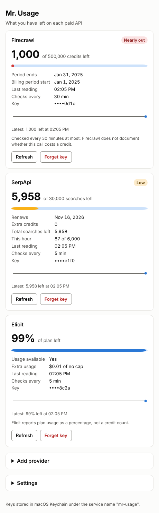
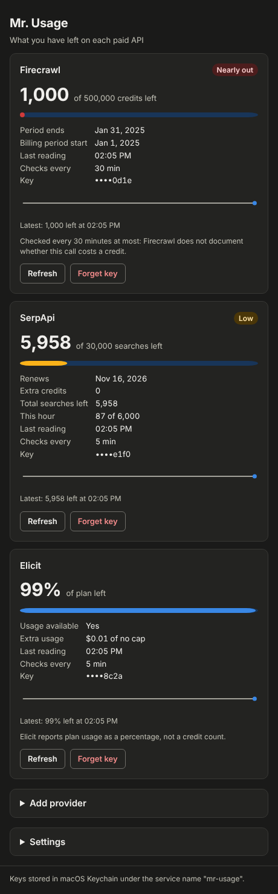

Mr. Usage
A desktop API credit monitor. Mr. Usage shows, in one window, how many credits you have left at Firecrawl, SerpApi, Elicit, Context7, Tavily, OpenRouter, Apify, Hunter and Runway, when each plan renews, and how the numbers moved today. You paste each API key once. It goes into your operating system's own credential store and never comes back to the window.
GitHub repository Latest release


What it does
- Polls each vendor's documented usage endpoint and shows remaining credits out of your plan, the renewal or period-end date, and a line of today's readings.
- Marks a provider Low under 20% and Nearly out under 5%, with a word next to the colour so the state never depends on colour alone.
- Keeps usage history in memory only. It is wiped at local midnight, when you press Wipe history now, and when the app quits.
| Provider | What the card shows |
|---|---|
| Firecrawl | Credits left out of the plan, and the end of the billing period |
| SerpApi | Searches left this month, and the renewal date |
| Elicit | Percentage of the plan left (needs a Pro plan or above) |
| Context7 | Requests left this month, and extra-request cost on paid plans |
| Tavily | Credits left out of the plan, plus this key's own usage |
| OpenRouter | Dollars left on the key's credit limit |
| Apify | Dollars left of this month's spending limit |
| Hunter | Searches left, plus verifications and the credit pool |
| Runway | The organization's credit balance |
Install
macOS or Linux, in a terminal:
curl -fsSL https://raw.githubusercontent.com/AlveeeRahman/mr-usage/main/install.sh | shWindows, in PowerShell:
irm https://raw.githubusercontent.com/AlveeeRahman/mr-usage/main/install.ps1 | iexThe command picks the right package for your machine, checks it against the release's checksum list, installs it and clears the "downloaded from the internet" flag, so the app opens without a detour through security settings. To install by hand instead, download from GitHub Releases; the README lists which file is which and what macOS and Windows will say about an unsigned app.
Where your keys live
macOS Keychain, Windows Credential Manager, or the Secret Service on Linux (GNOME Keyring, KWallet, KeePassXC), under the service name mr-usage. The app reads a key at the moment it calls the vendor, wraps it in a zeroizing type, and drops it. There is no server, no account, no analytics and no update check. The only network traffic is the usage call to each vendor you added a key for, over TLS 1.2 or newer to a fixed host list.
The full security design is in the threat model, every external fact is sourced in SOURCES.md, and an independent review is in REVIEW.md.
Uninstall
Run the same command with --uninstall (macOS, Linux) or -Uninstall (Windows). It removes the keys from your credential store, then the app, then its settings.